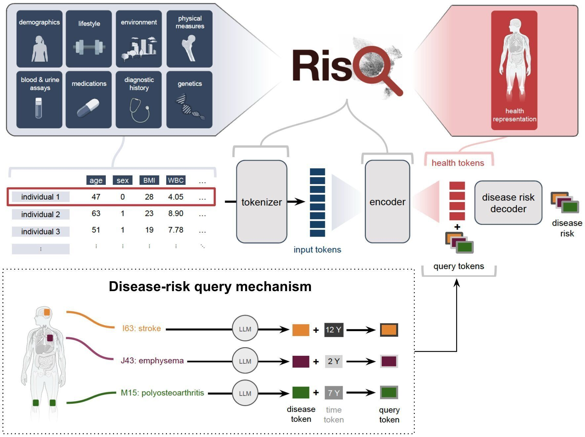

🩺 RisQ: Learning the Shared Structure of Human Health
A multimodal framework for disease risk prediction that learns a unified representation of a person's health from genetics, biomarkers, medications, lifestyle, and longitudinal clinical history, queryable in natural language for any disease over any time horizon. Trained and evaluated on ~500,000 UK Biobank participants, RisQ outperforms disease-specific models, multi-disease frameworks, and tabular foundation models, generalizes to unseen diseases and time horizons, and its learned representation recovers established disease genes and surfaces new candidates such as OMA1.